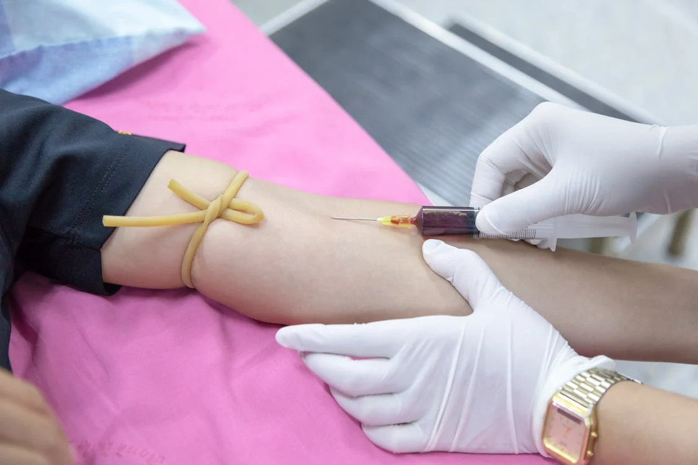

Health Promotion & Education
- Public awareness campaigns
- Health education programs
- Distribution of health information

Environmental Health
- Food safety and sanitation
- Vector control
- Waste management

Disaster Preparedness & Response
- Emergency medical services
- Disaster response plans
- Coordination with other agencies

Communicable Disease Control
- HIV/AIDS prevention and control
- Vaccination programs
- Tuberculosis control

Laboratory Services
- Blood testing
- Diagnostic testing
Data Collection & Analysis
- Health data collection
- Data analysis and interpretation
- Informing health policies
Advocacy & Policy Development
- Advocating for health-promoting policies
- Developing and implementing health programs
- Collaborating with stakeholders